方舟组件 Game-data components
这里的组件直接绑定游戏数据结构（稀有度、职业、精英化、技能、材料、模组…），图标来自 torappu 解包的游戏原图。
稀有度 / 职业 / 精英化 / 潜能 / 专精
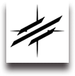
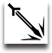
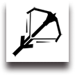
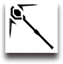
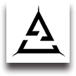
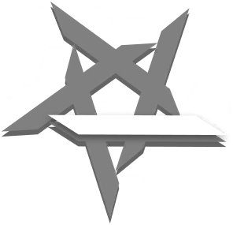
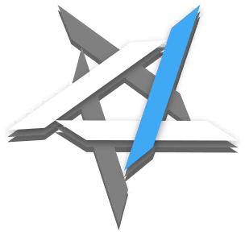
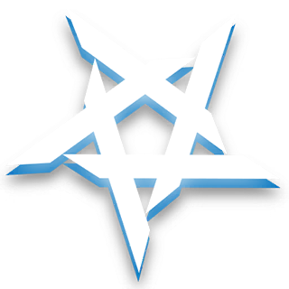
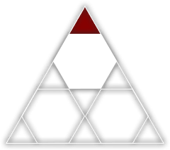
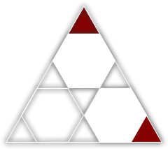
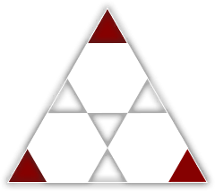
LV90LV90200%干员卡 · Operator card
道具与材料 · Item / Materials
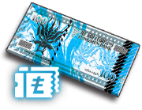
30K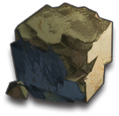
12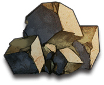
5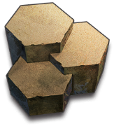
3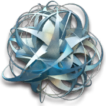
2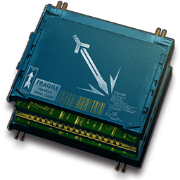
4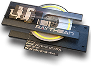
4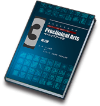
8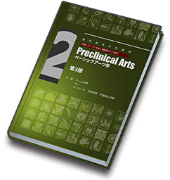
8 99+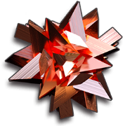
0 ×30000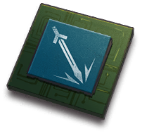
512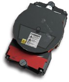
3 → 精英二180K4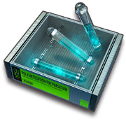
4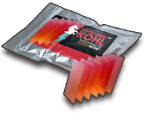
6技能 · Skill / 天赋 · Talent
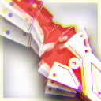
赤霄·绝影
攻击回复手动触发赤霄·拔刀
攻击回复手动触发鞘击
攻击回复自动触发真银斩
自动回复手动触发未解锁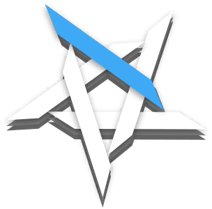
潜能5全等级 / 全条件对比表 · .ak-skill-sheet / .ak-talent-table
干员页正文沿用现网 prts.wiki 的做法：技能一张表列完 1–7 级 + 专精 Ⅰ–Ⅲ（初始 / 消耗 / 持续 按列对齐），天赋一张表列完各精英阶段 / 模组等级的条件，潜能加成用表头开关切换——不做「选一个等级看一份」的切换器。上面的 .ak-skill 卡留给列表 / 侧栏摘要。tr.is-hl 可高亮一行（示例：7 级）。
鞘击
攻击回复自动触发| 等级 | 描述 | 初始 | 消耗 | 持续 |
|---|---|---|---|---|
| 1 | 下次攻击使用刀鞘砸向敌人，造成相当于攻击力200%的物理伤害，令命中目标晕眩1秒 | 0 | 7 | |
| 2 | 下次攻击使用刀鞘砸向敌人，造成相当于攻击力210%的物理伤害，令命中目标晕眩1秒 | 0 | 7 | |
| 3 | 下次攻击使用刀鞘砸向敌人，造成相当于攻击力220%的物理伤害，令命中目标晕眩1秒 | 0 | 7 | |
| 4 | 下次攻击使用刀鞘砸向敌人，造成相当于攻击力230%的物理伤害，令命中目标晕眩1.25秒 | 0 | 6 | |
| 5 | 下次攻击使用刀鞘砸向敌人，造成相当于攻击力240%的物理伤害，令命中目标晕眩1.25秒 | 0 | 6 | |
| 6 | 下次攻击使用刀鞘砸向敌人，造成相当于攻击力250%的物理伤害，令命中目标晕眩1.25秒 | 0 | 6 | |
| 7 | 下次攻击使用刀鞘砸向敌人，造成相当于攻击力260%的物理伤害，令命中目标晕眩1.5秒 | 0 | 5 | |
| Ⅰ | 下次攻击使用刀鞘砸向敌人，造成相当于攻击力280%的物理伤害，令命中目标晕眩1.5秒 | 0 | 5 | |
| Ⅱ | 下次攻击使用刀鞘砸向敌人，造成相当于攻击力300%的物理伤害，令命中目标晕眩1.5秒 | 0 | 5 | |
| Ⅲ | 下次攻击使用刀鞘砸向敌人，造成相当于攻击力320%的物理伤害，令命中目标晕眩1.5秒 | 0 | 4 |
另一种对比：参数矩阵 · .ak-skill-matrix
等级横着放、参数竖着放（游戏内技能详情 / 各类工具箱的写法）：描述只写一遍，变量位写区间；每个变量一行，较上一级有变化的格子才亮、没变的淡掉——一眼看出哪一级涨了什么，十句重复的话不用读十遍，手机上也不用横向滚。悬停 / 点某一列，描述里的变量位换成该级数值。与上面的全等级表二选一，看版面。
鞘击
攻击回复自动触发| 等级 | 1 | 2 | 3 | 4 | 5 | 6 | 7 | Ⅰ | Ⅱ | Ⅲ |
|---|---|---|---|---|---|---|---|---|---|---|
| 伤害倍率 | 200% | 210% | 220% | 230% | 240% | 250% | 260% | 280% | 300% | 320% |
| 晕眩（秒） | 1 | 1 | 1 | 1.25 | 1.25 | 1.25 | 1.5 | 1.5 | 1.5 | 1.5 |
| 初始 | 0 | 0 | 0 | 0 | 0 | 0 | 0 | 0 | 0 | 0 |
| 消耗 | 7 | 7 | 7 | 6 | 6 | 6 | 5 | 5 | 5 | 4 |
| 第二天赋 | 条件 | 描述 |
|---|---|---|
| 持刀格斗术 | 精英二 | 攻击力+5%，防御力+5%，物理闪避+10%攻击力+6%（+1%），防御力+6%（+1%），物理闪避+13%（+3%） |
| 精英二 · Y模组 2级 | 攻击力+11%，防御力+11%，物理闪避+15%攻击力+12%（+1%），防御力+12%（+1%），物理闪避+18%（+3%） | |
| 精英二 · Y模组 3级 | 攻击力+15%，防御力+15%，物理闪避+18%攻击力+16%（+1%），防御力+16%（+1%），物理闪避+21%（+3%） |
属性 / 攻击范围 / 键值表
- 代号
- 陈 Ch'en
- 编号
- LM04
- 阵营
龙门近卫局- 标签
- 画师
- 唯@W
- 上线
- 2019.05.01
模组 / 语音 / 档案 / 剧情
陈，龙门高级警司，龙门近卫局特别督察组组长，毕业于维多利亚皇家近卫学校，成绩优异，表现突出。在龙门近卫局供职期间，力主取缔龙门境内非法活动……
【应龙门近卫局要求，不予公开】 — 悬停查看涂黑文本。
此处内容在信赖不足时模糊显示，覆盖斜纹与解锁条件说明。文本仍在 DOM 中，可被搜索索引，但对读者不可选中。
- 陈
- 博士，现在起由我担任你的护卫。
- 旁白
- 陈将剑鞘靠在墙边，环视了一圈办公室。
- 博士
- ……辛苦了。
关卡 / 敌人 / 阵营 / 活动
谢拉格
企鹅物流莱茵生命
维多利亚